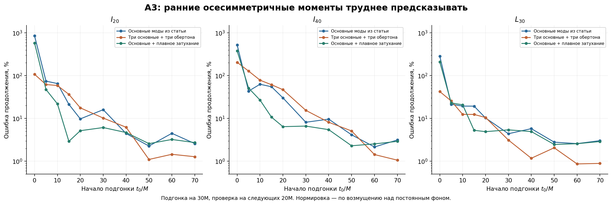
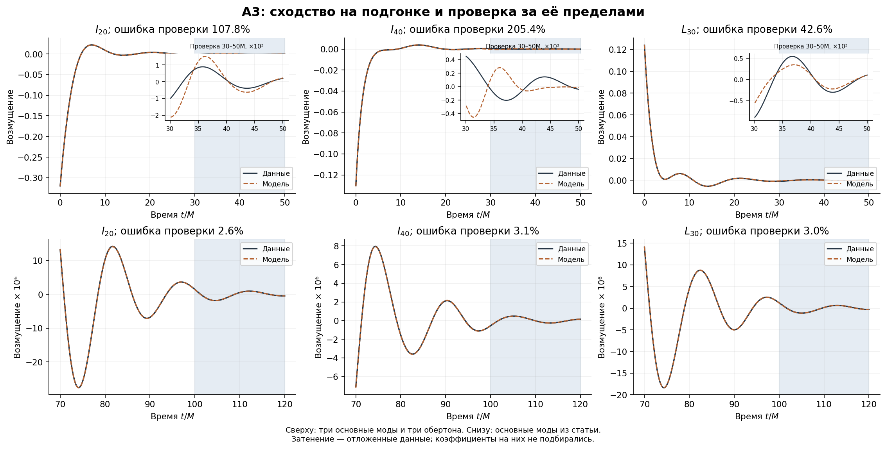

Отчёт сохранён как результат своего этапа. Исправления и границы всего выпуска сведены в итоговом отчёте.
BH-YITIAN-A3: осесимметричная часть общего горизонта
Дата: 15 сентября 2026 года. A3 продолжает A2. Эволюция QC0/SpEC и прежние A1/A2 не пересчитывались.
Результат: поздние I20, I40, L30 описываются небольшими наборами основных керровских колебаний с ошибкой продолжения около 2.6–3.1% на отрезке 100–120M. На ранних интервалах успешная подгонка несколькими модами не обеспечивает хорошего продолжения. Добавочная неосциллирующая экспонента помогает на некоторых промежуточных отрезках, но не установлена как отдельная физическая мода.
Постоянный фон — часть геометрии
$$Z_{\ell0}(t)=Z_{\ell0}^{\infty}+\delta Z_{\ell0}(t),\qquad Z_{\ell0}^{\infty}=\operatorname{mean}{400\le t/M\le500}Z{\ell0}(t).$$
Исходные моменты сохранены; среднее вычитается только для анализа возмущений. При m=0 поворот exp(−imΩt) равен единице, а ряды вещественны. Поэтому особенности A3 нельзя объяснить забытым частотным сдвигом mΩ.
| Момент | Поздний фон |
|---|---|
| I20 | -0.490070977172 |
| I40 | 0.046545899370 |
| L30 | -0.159949839063 |
Согласие этих фонов с керровскими моментами уже проверено в A1; здесь соответствующие значения переиспользованы. Это безразмерные геометрические моменты, а не непосредственно масса и спин.
Модели и критерий сравнения
$$\delta Z_{\mathrm{lin}}(t)=\sum_k e^{-\alpha_k(t-t_0)}[A_k\cos\omega_k(t-t_0)+B_k\sin\omega_k(t-t_0)].$$
Частоты фиксированы численным спектром Керра при Mf=0.95162M и χ=0.68644. Для каждого колебания подбираются две вещественные амплитуды. Синусы и косинусы эквивалентны согласованной паре положительной и отрицательной частот; подгонка одной комплексной экспоненты к вещественному ряду здесь не использовалась. Точки пересечения нуля сохранены.
| Модель | Компоненты | Число вещественных амплитуд |
|---|---|---|
| F1 | 200 | 2 |
| F2 | 200 + 300 | 4 |
| F3 | 200 + 300 + 400 | 6 |
| F1O1 | 200 + 201 | 4 |
| F1O2 | 200 + 201 + 202 | 6 |
| F1O3 | 200 + 201 + 202 + 203 | 8 |
| F3O1 | 200 + 300 + 400 + 201 | 8 |
| F3O2 | 200 + 300 + 400 + 201 + 202 | 10 |
| F3O3 | 200 + 300 + 400 + 201 + 202 + 203 | 12 |
| D | D | 1 |
| F1D | 200 + D | 3 |
| F2D | 200 + 300 + D | 5 |
| F3D | 200 + 300 + 400 + D | 7 |
Основные модели для сопоставления со статьёй: I20 — F1 (200); L30 — F2 (200,300); I40 — F3 (200,300,400). Более богатые модели служат контролем. Наборы и окна исследовательские, без заявления о заранее зарегистрированном испытании.
| Мода | ω, M⁻¹ | α, M⁻¹ |
|---|---|---|
| 200 | 0.413206065 | 0.089003429 |
| 201 | 0.390963921 | 0.272523689 |
| 202 | 0.352988107 | 0.470868646 |
| 203 | 0.310236362 | 0.686609563 |
| 300 | 0.656697666 | 0.092902813 |
| 400 | 0.883639654 | 0.094403240 |
| D | 0.000000000 | 0.170843662 |
Обозначение D означает отдельную диагностическую экспоненту exp(−λ(t−t0)), λ=2α220. Это не линейная квазинормальная мода и не заявленное обнаружение нелинейной моды. Мотивация только алгебраическая: квадрат модуля затухающего колебания даёт exp(−2αt); произведение азимутальных множителей с m=2 и m=−2 допускает m=0. Из этой алгебры не следует, что конкретный момент обязан содержать такой член или иметь установленную амплитуду. Нужна отдельная проверка физических уравнений и устойчивости связи.
Подгонка [t0,t0+30]M, проверка (t0+30,t0+50]M, t0=0,5,10,15,20,30,40,50,60,70M. Критерий:
$$E=\frac{|\delta Z-\delta Z_{\mathrm{model}}|_2}{|\delta Z|_2}.$$
Все проценты ниже — 100E. Это ошибка возмущения на всём отрезке, не ошибка полной геометрии, не максимум поточечной ошибки и не статистическая вероятность. Коэффициенты не подбирались на отложенном отрезке. Поздний фон и конечные параметры известны по всей симуляции, поэтому проверка не является полностью слепым предсказанием будущего. Перекрывающиеся окна не считаются независимыми опытами.
Поздние моменты
| Момент | Основная модель | Подгонка 70–100M: ошибка, % | Проверка 100–120M: ошибка, % | Абсолютная среднеквадратичная ошибка проверки |
|---|---|---|---|---|
| I20 | F1 | 0.5890 | 2.5939 | 2.419e-08 |
| I40 | F3 | 0.9842 | 3.1426 | 8.165e-09 |
| L30 | F2 | 0.6100 | 3.0296 | 1.861e-08 |
Для позднего I20 одной основной моды достаточно для описания в несколько процентов по этому критерию; I40 и L30 требуют смешения. Это согласуется с качественным выводом авторов, но наша ошибка продолжения не тождественна их мере несходства на подогнанном интервале.
Ранняя динамика: проверка против ложного успеха
| Момент | Модель | Подгонка 0–30M: ошибка, % | Проверка 30–50M: ошибка, % |
|---|---|---|---|
| I20 | F1 | 55.7111 | 855.9300 |
| I20 | F3O3 | 0.4850 | 107.8136 |
| I40 | F3 | 40.1646 | 521.1302 |
| I40 | F3O3 | 0.9051 | 205.4057 |
| L30 | F2 | 52.0373 | 286.7539 |
| L30 | F3O3 | 0.4725 | 42.5852 |
Даже малая ошибка подгонки не разрешает объявить ранний режим объяснённым. Большая относительная ошибка проверки отчасти отражает малый размер уже затухшего сигнала; абсолютная ошибка и амплитуда проверочного сигнала сохранены в JSON. Результат относится к выбранным моделям и процедуре, а не является доказательством невозможности любого керровского или нелинейного описания.
| Момент | Основная модель: проверка 50–70M, % | Та же модель + D: проверка 50–70M, % |
|---|---|---|
| I20 | 9.7793 | 5.1840 |
| I40 | 30.3344 | 6.4391 |
| L30 | 10.2802 | 4.9213 |
Добавление D помогает на этих промежуточных отрезках, но не закрывает самую раннюю динамику. Возможные причины остатка — нелинейная релаксация, неполный набор колебаний, изменение эффективных амплитуд, выбор временной координаты и численные эффекты. Одной успешной экспоненты недостаточно для выбора между ними.


Проверки чувствительности
Проверены окна позднего среднего 350–500, 400–500, 450–500M; шаг обучения 0.1,0.2,0.4M; округление Mf и χ на ±0.000005; длины обучения 20,30,40M на выбранных началах. Дополнительно проверены веса остатков exp(α200(t−t0)), уменьшающие преобладание больших ранних амплитуд. Эти веса — методический контроль, а не модель статистической погрешности.
| Момент | Обычные веса: ранняя проверка F3O3, % | Веса с компенсацией затухания: ранняя проверка F3O3, % |
|---|---|---|
| I20 | 107.8136 | 119.3959 |
| I40 | 205.4057 | 218.3029 |
| L30 | 42.5852 | 47.3645 |
Изменение процедуры может менять числа, поэтому отдельный остаток нельзя называть неизменной физической структурой. Полный набор результатов сохраняется, включая случаи ухудшения при расширении модели.
| Поздняя основная модель | Фон 400–500M: ошибка проверки, % | Керровский фон при округлённом χ: ошибка проверки, % | Керровский фон при χ из L10: ошибка проверки, % |
|---|---|---|---|
| I20, F1 | 2.5939 | 198.4908 | 2.5943 |
| I40, F3 | 3.1426 | 132.5491 | 3.1430 |
| L30, F2 | 3.0296 | 145.5301 | 3.0304 |
Важное различие: округлённый χ может прекрасно описывать полный ненулевой момент, но давать заметную ошибку после вычитания почти равных величин. Для честного сравнения выше во всех случаях использован один знаменатель — норма канонического возмущения относительно среднего 400–500M; полные моменты восстанавливаются перед вычислением остатка. Согласие фона, восстановленного по L10, является внутренней проверкой той же симуляции.
| Момент, модель + D | λ=0.8×2α220: проверка 50–70M, % | λ=2α220 | λ=1.2×2α220 |
|---|---|---|---|
| I20 | 2.9483 | 5.1840 | 7.5216 |
| I40 | 15.7184 | 6.4391 | 2.7020 |
| L30 | 6.8125 | 4.9213 | 3.7837 |
Эта проверка не является измерением λ или доверительным интервалом. Для вывода о квадратичной физической связи нужны устойчивость амплитуд, явная связь с родительскими компонентами и контроль численного разрешения.
Всего основных подгонок: 390; контрольных случаев: 558. В 107 из 330 вложенных сравнений расширение модели ухудшило продолжение. Максимальное число обусловленности нормированной матрицы: 1732. Проверка на известном вещественном сигнале с постоянной поправкой фона дала ошибку продолжения 1.76e-16.
Прореживание не проверяет сходимость пространственной сетки. Позднее рассеяние не задаёт ошибку раннего сигнала. Из одного разрешения и целевого значения AMR нельзя получить достоверную погрешность каждого момента. Порог статистической значимости и вероятность новой структуры здесь не вычислялись.
Точка продолжения
A3 завершён как проверка этих трёх моментов; ранняя динамика не объявляется полностью объяснённой. Следующий плановый шаг — A4: компоненты с m=4, начиная с I44, затем L54 и I64. Там необходимо вернуть авторский поворот exp(−4iΩt), проверить обычное смешение мод и лишь отдельно рассматривать дополнительные нелинейные шаблоны.
Контроль QC0 95→105M остаётся в маршруте. Его сетка, контрольная точка и выполненные результаты сохраняются; параметры Yitian в QC0 не подставляются. После завершения HF3 — HF4 с проверкой того, что можно восстановить из угловых коэффициентов и что требует метрики поверхности. Научный фильм остаётся этапом после такой проверки.
Повторение
Из папки распакованного пакета:
python BH_YITIAN_A3.py --input /путь/common_horizon_moments_data_and_scripts.zip --output repeated
Исходный архив не дублируется. Для обработки нужны numpy, scipy, h5py, matplotlib. Для пересчёта только спектра m=0 добавить --recompute-spectrum; тогда нужен qnm==0.4.4. Контекст A1/A2, спектр и точка продолжения включены в пакет.
Источники методики: Chen и соавторы, разделы IV C–D; документация qnm. Диагностический член D и проверки продолжения — наш исследовательский вариант, а не вывод статьи о данном члене.